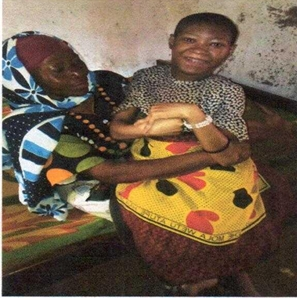
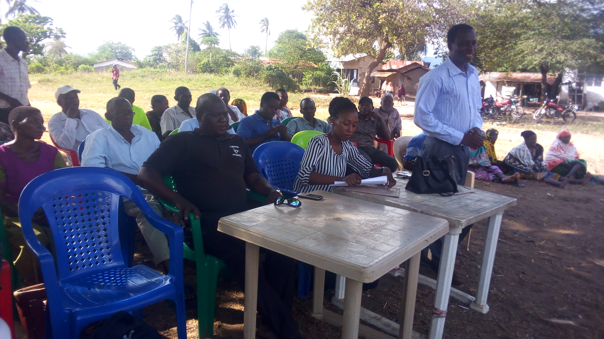
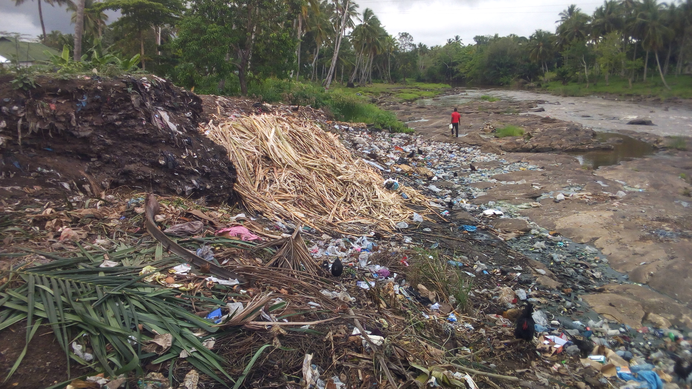
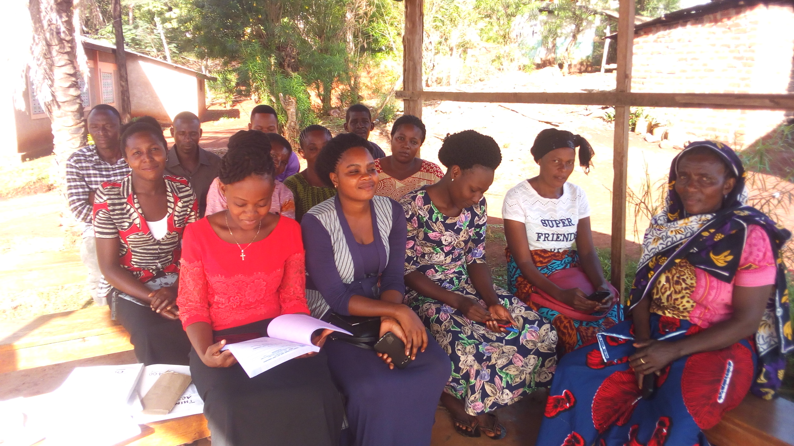
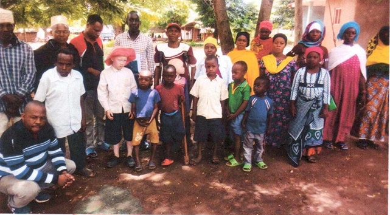

Community Projects
Since our inception in August 2019, we've been implementing impactful projects using member contributions and community partnerships.


Community Awareness for People with Disabilities
Conducted community awareness rising to people with disabilities to build self-confidence and understanding for their rights. This also involved individual self-assessment to evaluate capacities, strengths, and weaknesses to find areas of intervention.
- Built self-confidence in participants
- Identified areas for targeted support
- Strengthened community understanding


Good Governance (Voters' Education 2020)
Conducted awareness to the community about voters' education in the National Election of 2020 in Korogwe District, Tanga region. This initiative empowered citizens to participate meaningfully in the democratic process.
- Increased voter awareness
- Enhanced civic participation
- Strengthened democracy


Environmental Protection and Sanitation
Performed environmental protection and sanitation activities in parts of Korogwe District, including Manundu, Hale, and Makinyumbi–Miembeni. These efforts promoted hygiene and environmental sustainability.
- Improved environmental hygiene
- Community awareness on sanitation
- Sustainable practices adopted

Data Collection for People with Disabilities
Collected data from people with disabilities to determine how the organization can support them through donor funding. This comprehensive data collection helps us understand community needs and design targeted interventions.
- Comprehensive needs assessment
- Informed program design
- Evidence-based advocacy
Support Our Work
The TATA organization is actively seeking and making efforts to access grants from internal and external donors for funding to continue ongoing activities and expand its reach. Several project proposals are available for potential donors interested in our thematic areas.
Partner With Us